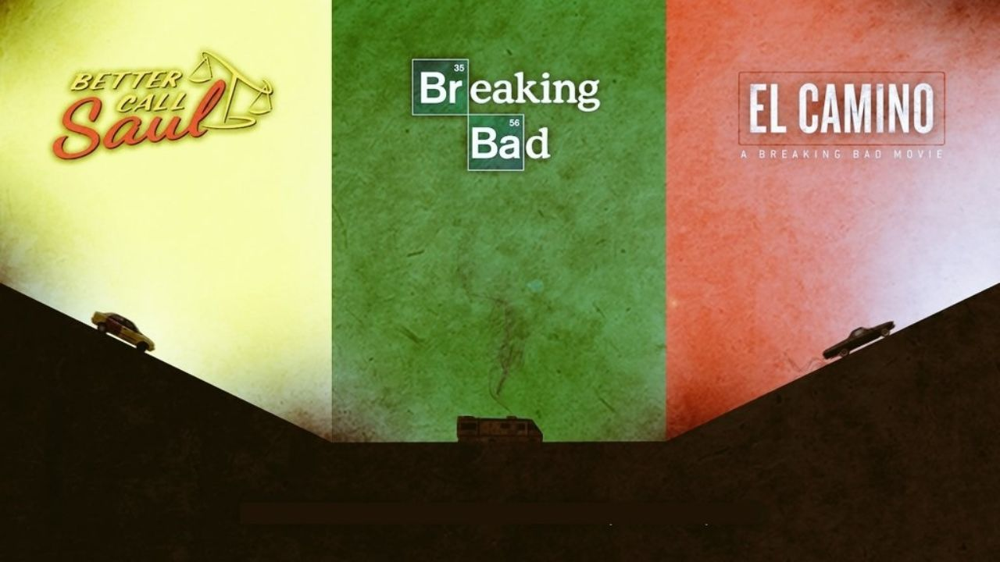

Breaking Bad & Better Call Saul

De las mejores series de su tiempo. Me maravilla todo el universo de Breaking Bad, tanto por su propuesta narrativa como por la cinematográfica. La serie destaca por la forma en que presenta a sus personajes y utiliza simbolismos para reflejar sus historias y estados de ánimo. Los giros argumentales, junto con el equilibrado manejo del humor y el drama, hacen que la serie no solo sea atrayente, sino también fácil de seguir.
Creado por:
Vince Gilligan